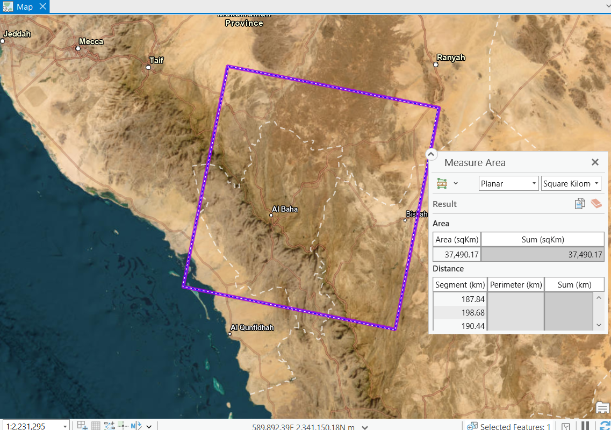
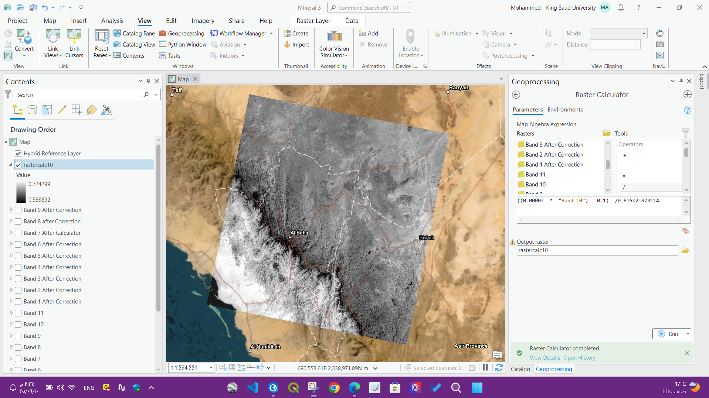

Identify Mineral Sites using GIS and Remote Sensing
Intro.
The Saudi Arabian Mining Company (Maaden) recently announced the potential discovery of significant gold resource potential extending along a
This is the first discovery within the intensive exploration program in Ma’aden, which was launched in 2022 and aims to build a mineral production line. This is not a coincidence, as the number
of exploration and mining licenses has increased over the past three years by more than
region is considered a major source of precious and basic metals, with an area of 700 thousand square kilometers or the equivalent of the area of Kazakhstan. But exploration and
extraction of gold is only one part of the mining system in the Kingdom, as the value of unexploited minerals is estimated at
equivalent to the annual gross domestic product of some countries such as
My Study Area
In Area about 37,490 Square Kilometer South-West of Saudi Arabia, I chose to set the Minerals Identificaion Project, In Asir Region (Al-Baha and Bishah and some part of the Red Sea).see fig(1)

As Part 1 ,and there will be more areas to discover soon InshaAllah
Data
I Took the Data (Landsat8 Satellite Imagery) from USGS (United States Geological Survey)
The Landsat 8 satellite payload consists of two science instruments—the Operational Land Imager (OLI) and the Thermal Infrared Sensor (TIRS). These two sensors provide seasonal coverage of the global landmass at a spatial resolution of 30 meters (visible, NIR, SWIR); 100 meters (thermal); and 15 meters (panchromatic).
(Source:landsat.gsfc.nasa.gov)

Correcting The Atmospheric factor , Sun elevation

using the above equation I corrected all the acquired bands and use the Factors in Landsat metadata file , where i got the sun elevation and band reflectance, and use (ArcGIS PRO Image Analysis Tools )for my project, using Raster Calculcator .I did the 2 Equations in one STEP .see fig(2) below

Rock Index, Band Ratio Technique, Compositions and Link view comparisons
Rock index is defined as a ratio similar with NDVI but different bands , Using Raster Calculator Tool in GIS : RI = (B7 - B3) / (B7 + B3) see fig(3) below

Using Band Ratio 4/2 ,6/7 and 6/5 and composite the Ratios as 4/2 for RED and 6/7 for GREEN and 6/5 for BLUE using GIS . See fig(4) below

Using Band Ratios 4/2,6/7 and Ratio of their sum 4/2+6/7 I got the following Result using GIS. See fig(5) below:

Using Band Ratioing 6/5,7/5,4/7 I got the following Result using GIS . See fig(6) Below:

Now the analysis part. and do comparison. see Fig(7),Fig(8),Fig(9) and fig(10) below:
Fig(7)

Fig(8)

Fig(9)

Fig(10)